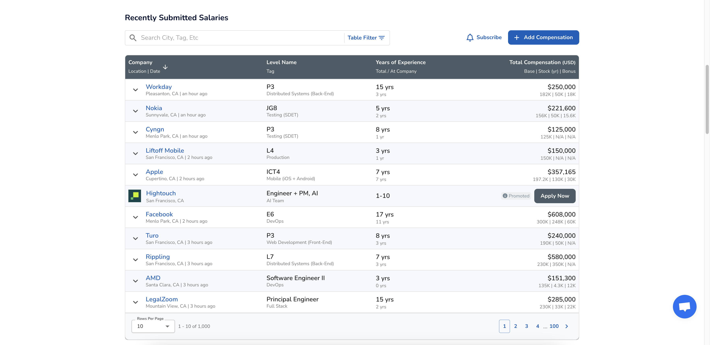

What is the purpose of the Visualization?
The Levels.fyi Compensation Heatmap visualization provides insights into salary trends across different areas and regions for software engineers.
What is the data and how was it collected?
The data in this visualization is an intersection of location and salary. The data is captured primarily from user-submitted salary reports from software engineering employees. Users voluntarily submit their salary details, job title, company, and location and Levels.fyi verifies and updates the visualization.

Who are the users that this visualization was made for?
This visualization was primarily made for software engineer professionals and others interested in compensation trends. These users can include job seekers, employers, recruiters, early-career professionals, and digital nomads.
What questions can people ask and answer about this data using this visualization? How can they find the answers with this tool?
-
How does my salary compare to others in my location? – The user can either search for or select their area on the map and view the salary percentiles to compare their salary with these ranges.
-
Which locations offer the highest or lowest software engineer salaries? – The user can switch the dropdown option in the top right to choose a higher percentile, then view the hotspots on the map.
-
What do average software engineer salaries look like in other countries? – The user can use the globe dropdown at the top of the screen to select one of various countries to compare their salary to.

-
Which areas offer the best salary-to-cost-of-living ratio? – The user can use the Cost-of-Living Adjustment switch to consider cost of living in the displayed salaries.
Comments on the visual and interaction design choices
- The visualization is easy to use and effectively represents the geographical representation of the data
- The selectors to filter or change the displayed data are clear and bug-free
- Some of the color gradients have very similar colors, making it hard to distinguish close values
What are the limitations of this design?
- Comparing salaries between locations or countries in one view - The user is unable to compare salaries between two areas without hovering back and forth, or between cuntries without switching pages entirely.
- Comparing company salaries without leaving the page - Individual company salaries are not shown in the tooltips and cannot be seen without clicking the location to be taken to a new page.
- Comparing salaries of different roles and titles - The visualization shows salaries in percentile groups, with no relation to job titles. The user cannot know if the median salary in one area is primarily data from Junior/Entry-Level or Senior Software Engineers